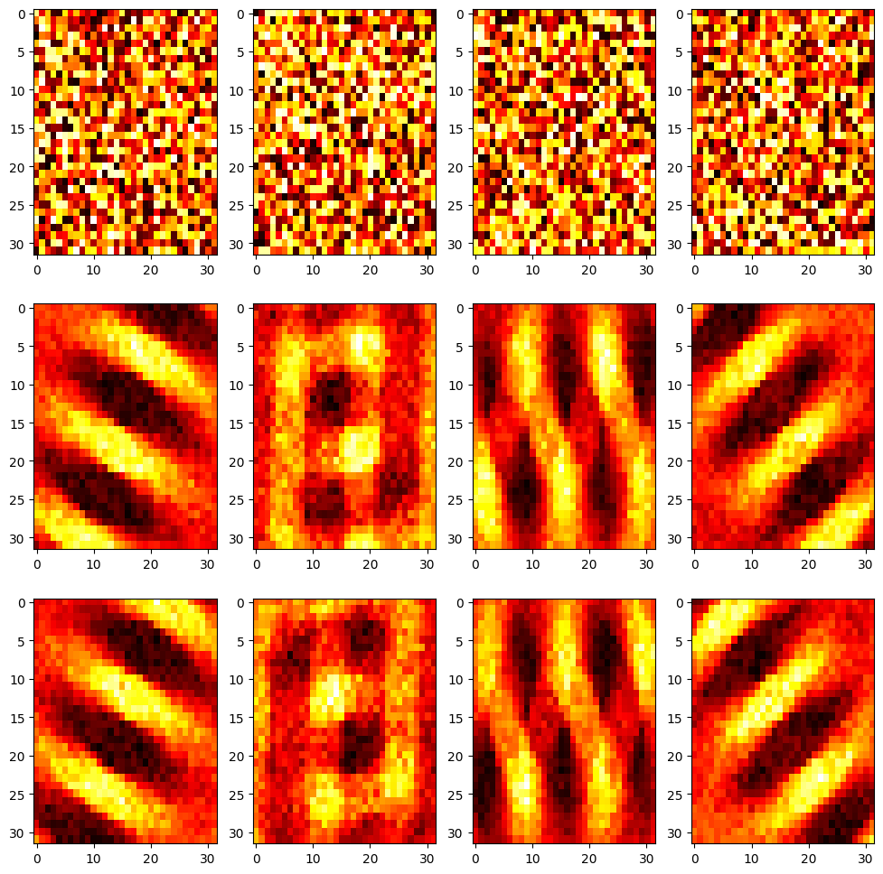
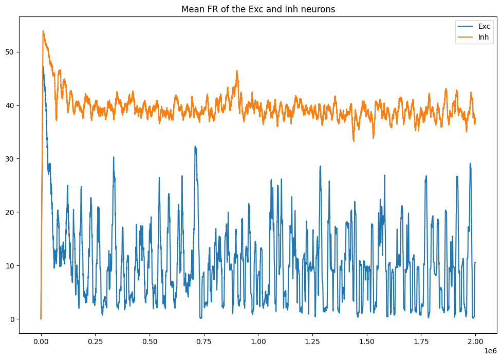
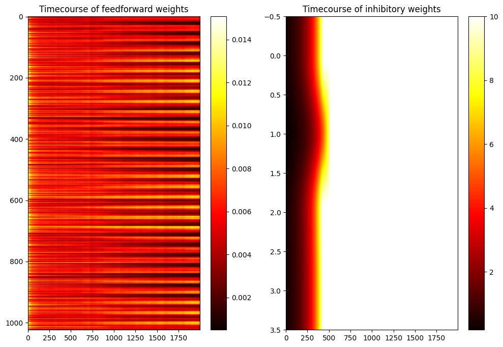

#!pip install ANNarchyHomeostatic STDP: SORF model


Reimplementation of the SORF model published in:
Carlson, K.D.; Richert, M.; Dutt, N.; Krichmar, J.L., “Biologically plausible models of homeostasis and STDP: Stability and learning in spiking neural networks,” in Neural Networks (IJCNN), The 2013 International Joint Conference on , vol., no., pp.1-8, 4-9 Aug. 2013. doi: 10.1109/IJCNN.2013.6706961
import numpy as np
import ANNarchy as annnb_neuron = 4 # Number of exc and inh neurons
size = (32, 32) # input size
freq = 1.2 # nb_cycles/half-image
nb_stim = 40 # Number of grating per epoch
nb_epochs = 20 # Number of epochs
max_freq = 28. # Max frequency of the poisson neurons
T = 10000. # Period for averaging the firing rate# Izhikevich Coba neuron with AMPA, NMDA and GABA receptors
RSNeuron = ann.Neuron(
parameters = """
a = 0.02 : population
b = 0.2 : population
c = -65. : population
d = 8. : population
tau_ampa = 5. : population
tau_nmda = 150. : population
tau_gabaa = 6. : population
tau_gabab = 150. : population
vrev_ampa = 0.0 : population
vrev_nmda = 0.0 : population
vrev_gabaa = -70.0 : population
vrev_gabab = -90.0 : population
""" ,
equations="""
# Inputs
I = g_ampa * (vrev_ampa - v) + g_nmda * nmda(v, -80.0, 60.0) * (vrev_nmda -v) + g_gabaa * (vrev_gabaa - v) + g_gabab * (vrev_gabab -v)
# Midpoint scheme
dv/dt = (0.04 * v + 5.0) * v + 140.0 - u + I : init=-65., min=-90., midpoint
du/dt = a * (b*v - u) : init=-13., midpoint
# Conductances
tau_ampa * dg_ampa/dt = -g_ampa : exponential
tau_nmda * dg_nmda/dt = -g_nmda : exponential
tau_gabaa * dg_gabaa/dt = -g_gabaa : exponential
tau_gabab * dg_gabab/dt = -g_gabab : exponential
""" ,
spike = """
v >= 30.
""",
reset = """
v = c
u += d
g_ampa = 0.0
g_nmda = 0.0
g_gabaa = 0.0
g_gabab = 0.0
""",
functions = """
nmda(v, t, s) = ((v-t)/(s))^2 / (1.0 + ((v-t)/(s))^2)
""",
refractory=1.0
)# STDP with homeostatic regulation
homeo_stdp = ann.Synapse(
parameters="""
# STDP
tau_plus = 60. : projection
tau_minus = 90. : projection
A_plus = 0.000045 : projection
A_minus = 0.00003 : projection
# Homeostatic regulation
alpha = 0.1 : projection
beta = 50.0 : projection # <- Difference with the original implementation
gamma = 50.0 : projection
Rtarget = 10. : projection
T = 10000. : projection
""",
equations = """
# Homeostatic values
R = post.r : postsynaptic
K = R/(T*(1.+fabs(1. - R/Rtarget) * gamma)) : postsynaptic
# Nearest-neighbour
stdp = if t_post >= t_pre: ltp else: - ltd
w += (alpha * w * (1- R/Rtarget) + beta * stdp ) * K : min=0.0, max=10.0
# Traces
tau_plus * dltp/dt = -ltp : exponential
tau_minus * dltd/dt = -ltd : exponential
""",
pre_spike="""
g_target += w
ltp = A_plus
""",
post_spike="""
ltd = A_minus
"""
)# Input population
OnPoiss = ann.PoissonPopulation(size, rates=1.0)
OffPoiss = ann.PoissonPopulation(size, rates=1.0)
# RS neuron for the input buffers
OnBuffer = ann.Population(size, RSNeuron)
OffBuffer = ann.Population(size, RSNeuron)
# Connect the buffers
OnPoissBuffer = ann.Projection(OnPoiss, OnBuffer, ['ampa', 'nmda'])
OnPoissBuffer.connect_one_to_one(ann.Uniform(0.2, 0.6))
OffPoissBuffer = ann.Projection(OffPoiss, OffBuffer, ['ampa', 'nmda'])
OffPoissBuffer.connect_one_to_one(ann.Uniform(0.2, 0.6))
# Excitatory and inhibitory neurons
Exc = ann.Population(nb_neuron, RSNeuron)
Inh = ann.Population(nb_neuron, RSNeuron)
Exc.compute_firing_rate(T)
Inh.compute_firing_rate(T)
# Input connections
OnBufferExc = ann.Projection(OnBuffer, Exc, ['ampa', 'nmda'], homeo_stdp)
OnBufferExc.connect_all_to_all(ann.Uniform(0.004, 0.015))
OffBufferExc = ann.Projection(OffBuffer, Exc, ['ampa', 'nmda'], homeo_stdp)
OffBufferExc.connect_all_to_all(ann.Uniform(0.004, 0.015))
# Competition
ExcInh = ann.Projection(Exc, Inh, ['ampa', 'nmda'], homeo_stdp)
ExcInh.connect_all_to_all(ann.Uniform(0.116, 0.403))
ExcInh.Rtarget = 75.
ExcInh.tau_plus = 51.
ExcInh.tau_minus = 78.
ExcInh.A_plus = -0.000041
ExcInh.A_minus = -0.000015
InhExc = ann.Projection(Inh, Exc, ['gabaa', 'gabab'])
InhExc.connect_all_to_all(ann.Uniform(0.065, 0.259))
ann.compile()Compiling ... OK # Inputs
def get_grating(theta):
x = np.linspace(-1., 1., size[0])
y = np.linspace(-1., 1., size[1])
xx, yy = np.meshgrid(x, y)
z = np.sin(2.*np.pi*(np.cos(theta)*xx + np.sin(theta)*yy)*freq)
return np.maximum(z, 0.), -np.minimum(z, 0.0)
# Initial weights
w_on_start = OnBufferExc.w
w_off_start = OffBufferExc.w
# Monitors
m = ann.Monitor(Exc, 'r')
n = ann.Monitor(Inh, 'r')
o = ann.Monitor(OnBufferExc[0], 'w', period=1000.)
p = ann.Monitor(ExcInh[0], 'w', period=1000.)
# Learning procedure
from time import time
import random
tstart = time()
stim_order = list(range(nb_stim))
try:
for epoch in range(nb_epochs):
random.shuffle(stim_order)
for stim in stim_order:
# Generate a grating randomly
rates_on, rates_off = get_grating(np.pi*stim/float(nb_stim))
# Set it as input to the poisson neurons
OnPoiss.rates = max_freq * rates_on
OffPoiss.rates = max_freq * rates_off
# Simulate for 2s
ann.simulate(2000.)
# Relax the Poisson inputs
OnPoiss.rates = 1.
OffPoiss.rates = 1.
# Simulate for 500ms
ann.simulate(500.)
print('Epoch', epoch+1, 'done.')
except KeyboardInterrupt:
print('Simulation stopped')
print('Done in ', time()-tstart)
# Recordings
datae = m.get('r')
datai = n.get('r')
dataw = o.get('w')
datal = p.get('w')Epoch 1 done.
Epoch 2 done.
Epoch 3 done.
Epoch 4 done.
Epoch 5 done.
Epoch 6 done.
Epoch 7 done.
Epoch 8 done.
Epoch 9 done.
Epoch 10 done.
Epoch 11 done.
Epoch 12 done.
Epoch 13 done.
Epoch 14 done.
Epoch 15 done.
Epoch 16 done.
Epoch 17 done.
Epoch 18 done.
Epoch 19 done.
Epoch 20 done.
Done in 122.07915997505188# Final weights
w_on_end = OnBufferExc.w
w_off_end = OffBufferExc.w
# Plot
import matplotlib.pyplot as plt
plt.figure(figsize=(12, 12))
plt.title('Feedforward weights before and after learning')
for i in range(nb_neuron):
plt.subplot(3, nb_neuron, i+1)
plt.imshow((np.array(w_on_start[i])).reshape((32,32)), aspect='auto', cmap='hot')
plt.subplot(3, nb_neuron, nb_neuron + i +1)
plt.imshow((np.array(w_on_end[i])).reshape((32,32)), aspect='auto', cmap='hot')
plt.subplot(3, nb_neuron, 2*nb_neuron + i +1)
plt.imshow((np.array(w_off_end[i])).reshape((32,32)), aspect='auto', cmap='hot')
plt.figure(figsize=(12, 8))
plt.plot(datae[:, 0], label='Exc')
plt.plot(datai[:, 0], label='Inh')
plt.title('Mean FR of the Exc and Inh neurons')
plt.legend()
plt.figure(figsize=(12, 8))
plt.subplot(121)
plt.imshow(np.array(dataw, dtype='float').T, aspect='auto', cmap='hot')
plt.title('Timecourse of feedforward weights')
plt.colorbar()
plt.subplot(122)
plt.imshow(np.array(datal, dtype='float').T, aspect='auto', cmap='hot')
plt.title('Timecourse of inhibitory weights')
plt.colorbar()
plt.show()/var/folders/6w/6msx49ws7k13cc0bbys0tt4m0000gn/T/ipykernel_8956/2229657718.py:11: MatplotlibDeprecationWarning: Auto-removal of overlapping axes is deprecated since 3.6 and will be removed two minor releases later; explicitly call ax.remove() as needed.
plt.subplot(3, nb_neuron, i+1)

